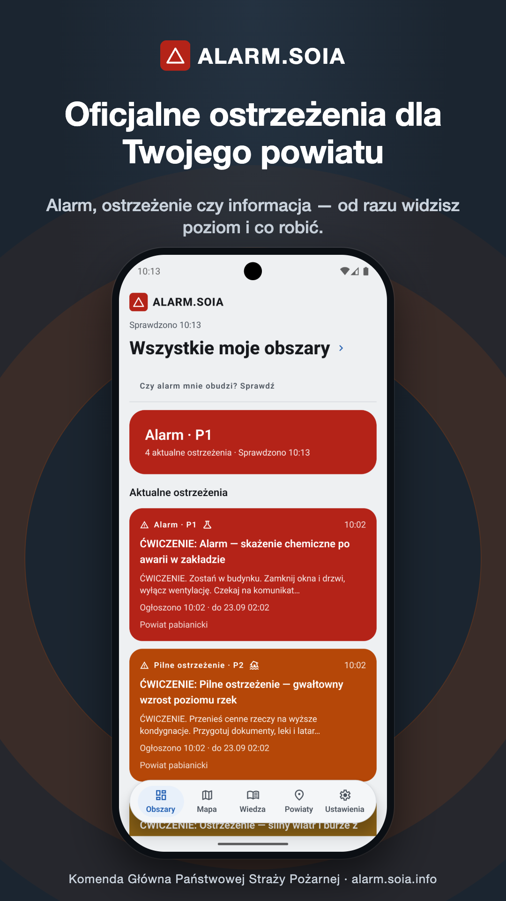
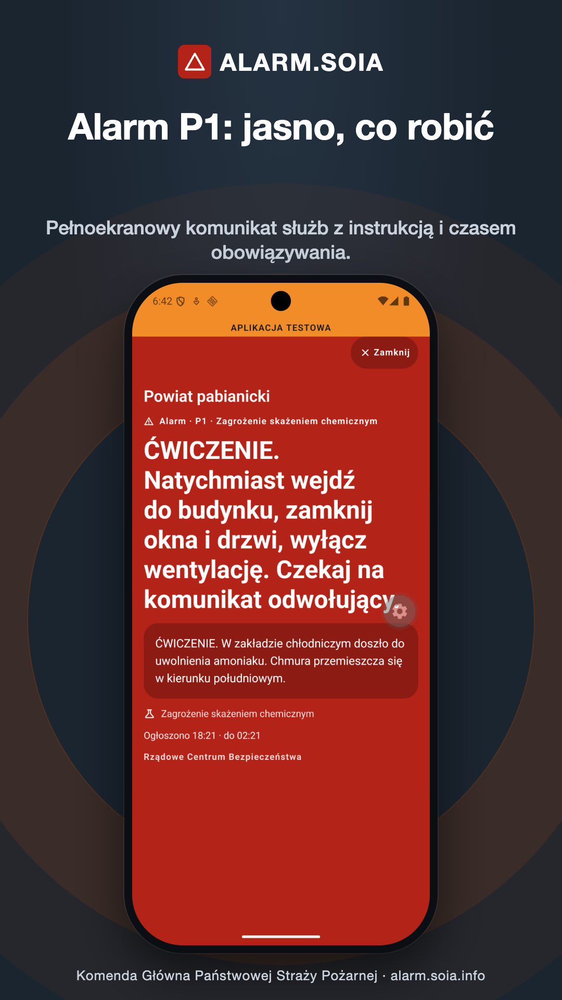
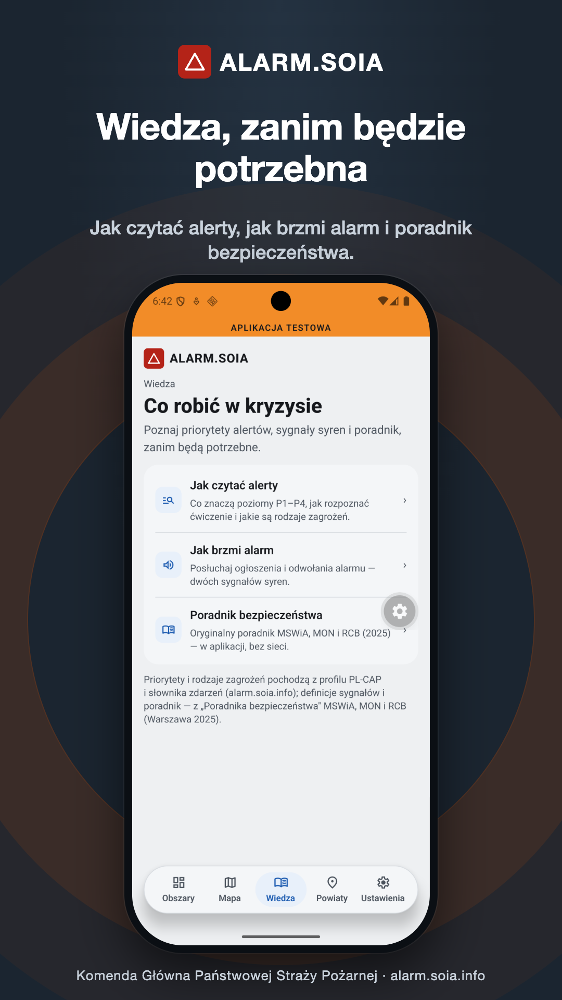
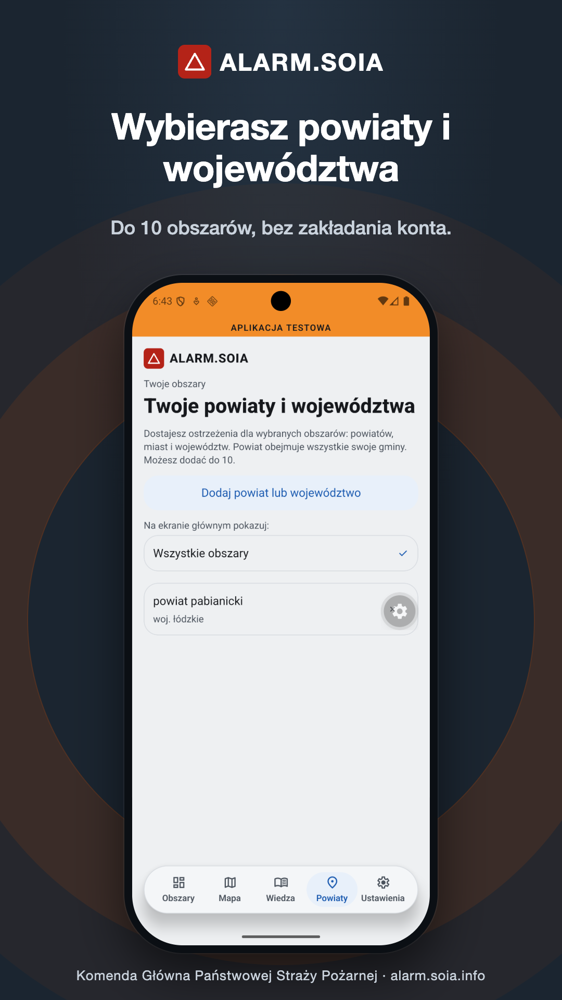

Oficjalne komunikaty PL-CAP
Ostrzeżenia publikują wyłącznie uprawnione służby — raz, w standardzie PL-CAP. Aplikacja pobiera je z alarm.soia.info, z tego samego źródła, które zasila portal i syreny. Nadawcę widzisz na dole każdego alarmu.
ALARM.SOIA to bezpłatna aplikacja Komendy Głównej Państwowej Straży Pożarnej. Odbiera oficjalne ostrzeżenia w standardzie PL-CAP z alarm.soia.info dla wybranych powiatów, miast i województw — bez zakładania konta.

Aplikacja nie zakłada konta i nie czyta położenia telefonu. Obszary wskazujesz sam, a ostrzeżenia docierają z jednego, oficjalnego źródła.
Każdy element skraca drogę od komunikatu służb do telefonu mieszkańca.
Ostrzeżenia publikują wyłącznie uprawnione służby — raz, w standardzie PL-CAP. Aplikacja pobiera je z alarm.soia.info, z tego samego źródła, które zasila portal i syreny. Nadawcę widzisz na dole każdego alarmu.
Wskazujesz powiat, miasto albo województwo (kod TERYT) — do 10 obszarów. Aplikacja nie czyta położenia telefonu: ostrzega dla miejsc, które wybierzesz, na przykład domu rodziców.
Alarm zagrożenia życia (P1) gra na pełną głośność także przy wyciszonym telefonie — na iPhonie po zgodzie na alerty krytyczne. O poziomach P2–P4 powiadamiasz się według własnych potrzeb.
Mapa ostrzeżeń z granicami powiatów (w tej wersji na iPhonie; na Androidzie lista), historia z ostatnich 48 godzin, dwa sygnały syren do odsłuchania i „Poradnik bezpieczeństwa” MSWiA, MON i RCB (2025) dostępny bez sieci.
Zrzuty pokazują prawdziwy interfejs aplikacji z ostrzeżeniami ćwiczebnymi opublikowanymi na potrzeby testów.



Wpis w sklepach, pomoc i polityka prywatności korzystają z tej samej tożsamości instytucjonalnej.